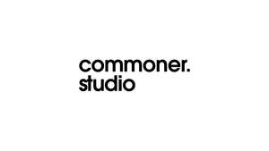

Trade Mark Journal No.2025/025 20 June 2025
UK00004212665 2 June 2025 (35,41)

- Class 35
- Cinema advertising; Television advertising; Film directing of advertising films; Radio and television advertising; Production of cinema commercials; Advertising; Advertising and marketing; Advertising copywriting; Advertising, marketing and promotional services; Scriptwriting for advertising purposes; Post-production editing of advertising or commercials; Copywriting.
- Class 41
- Production of television and cinema films; Film production, other than advertising films; Television, radio and film production; Production of television films; Production of films, other than advertising films; Film directing, other than advertising films; Recording, film, video and television studio services; Audio, film, video and television recording services; Production of television entertainment programmes; Production of cinema films; Television entertainment; Cinema entertainment; Production of entertainment in the form of television programmes; Television and radio entertainment; Television production; Television programmes (Production of radio and -); Production of radio and of television programmes; Production of television or radio programmes; Provision of entertainment services through the media of television; Television entertainment services; Production of television and radio programmes; Production of television programmes; Preparation of documentary programmes for the cinema; Film production for entertainment purposes; Production of cinematographic films; Video film production; Entertainment by film; Film editing (Cinematographic -); Production of radio or television programs; Entertainment services in the form of television programmes; Post-production editing services in the field of music, videos and film; Film studios; Editing of television programmes; Television programme production; Production of films for entertainment purposes; Film studio services; Production of television programs; Production of audiovisual recordings; Audio, video and multimedia production, and photography; Production of audio entertainment; Production of educational sound and video recordings; Rental services for audio and video equipment; Cinematographic film studio services; Sound recording and video entertainment services; Production of video and audio recordings; Audio and video recording services; Audio and video production, and photography; Video and audio rental services; Provision of audio and visual media via communications networks; Provision of entertainment services through the media of video-films; Provision of entertainment services through the media of cine-films; Digital video, audio and multimedia entertainment publishing services; Video editing; Video production; Editing of video recordings; Video tape production; Video recording services; Video game services; Production of video recordings; Audio and video editing services; Rental of video cameras; Production of video cassettes; Providing audio or video studios; Production of video films; Scriptwriting, other than for advertising purposes; Scriptwriting services; Screenplay writing; Writing screenplays; Cinematographic adaptation and editing; Film editing (Photographic -); Production of training films; Production of animation; Publishing of scripts for theatrical use; Production of films in studios; Film production; Preparation of entertainment programmes for the cinema; Production of documentaries; Production of films; Freelance journalism; Services for the production of entertainment in the form of film; Television and radio programme preparation and production; Animation production services; Film production services; Television program production; Subtitling; Journalism services; Photographic reporting; Photo editing; Film editing; Editing of video-tapes; Editing of cine-films; Written text editing; Editing of written text; Editing of audio recordings; Video editing services for events; Script writing services; Audio recording and production; Song writing services; Preparation of documentary programmes for broadcasting; Special effects animation services for film and video; Film distribution; Showing of films.
Oscar Gogerly Pino